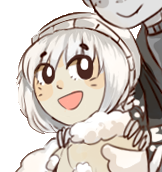
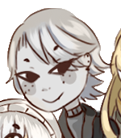
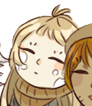
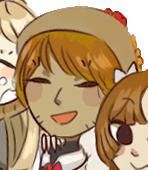

| Inicio | Historia | Personajes | Cortos |
Productos |
|---|
Haz click sobre el nombre del personaje para desbloquear un atuendo especial!
Nombre |
Datos |
Descripción |
|---|---|---|
|  | Edad: 18 años (humanos) Comida favorita: Krill Color favorito: Celeste Postre favorito: Helado |
Un chico paranoico, miedoso e histérico, suele ser muy inseguro de sí mismo, prefiere siempre la tranquilidad y dormir. A pesar de que le gustaría ser más asertivo, suele ser muy nervioso y huir de los problemas, lo que lo hace una tarea difícil pero que está dispuesto a cambiar. Sensible, emocional, quejoso y perezoso, una foca que sin duda no se puede ignorar, ya que todo lo que siente, lo expresa en voz alta. |
Harp Seal |
||
|  | Edad: 18 años (humanos) Comida favorita: Pinguinos Color favorito: Negro Postre favorito: Papas saladas |
Mejor amigo de Harp y casi un criminal buscado. Es impulsivo, salvaje y efusivo. Tiene fama de ser peligroso debido a que entre las comunidades del Ártico es un carnívoro temible (y lo és) pero la verdad es que también es muy buena persona, atento de sus amigos, defensor de los mismos y servicial. Con la confianza por los cielos y temerario, le gusta perseguir la diversión y lo desconocido, para bien o para mal, es un chico de acción que nunca le dice no a una oportunidad. |
Leopard Seal |
||
|  | Edad: 17 años (humanos) Comida favorita: Peces Color favorito: Amarillo Postre favorito: Donas |
La sobrina adoptada de Hawaiian. Le llaman "Medi" de cariño. Tímida e introvertida, suele ser muy observadora y le gustan mucho los cómics y las manualidades. Parece ser muy sería pero la verdad es muy temerosa y nerviosa, suele mantener un rostro poco expresivo. |
| Mediterranean Monk Seal | ||
Edad: 27 años (humanos) Comida favorita: Calamar Color favorito: Verde Postre favorito: Bizcocho de chocolate |
La casera. Suele decir siempre lo que piensa, amistosa y responsable. Le gusta estar en compañía y sociabilizar, y así como tiene buen sentido del humor, tampoco escatima en dar regaños. Con los menores que le rodean suele ser muy cariñosa y protectora. Estricta cuando debe serlo y terca como ninguna otra. | |
Weddell Seal |
||
|  | Edad: 30 años (humanos) Comida favorita: Pulpo Color favorito: Rojo Postre favorito: Pie de limón |
El chef y casero. Le llaman "Hawa" de cariño. Suele ser muy relajado, amigable y pacífico. Le gusta dar consejos y contar historias, tiene pasión por la música y el baile, al igual que Weddell, por lo que suelen danzar juntos. Aunque en el fondo le importen mucho los demás, suele ser bromista y gustar meter a los demás en aprietos, es muy listo y reflexivo. |
Hawaiian Monk Seal |